![]()
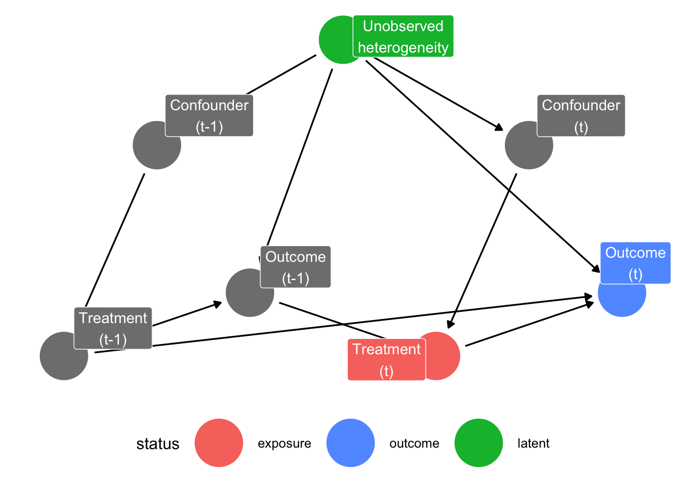
Tutorial: Marginal Structural Models for Panel Conditioning Research
This simulation is based on a paper by Blackwell & Glynn (2018). You can find the Dataverse and replication files here.
Why Marginal Structural Models?
Let’s assume we are interested in the longitudinal effect of a particular treatment \(A(t)\). This treatment could be the intake of a specific medicine, taking part in a training programme, or participating in some sort of event – like participating in a survey. In addition to treatment \(t\), we also measure other predictors stored in the vector \(L(z)\). Let \(\bar A(t)\) be the treatment history and \(\bar L(z)\) the history of predictors.
According, to Robins (1999), say that a treatment process is causally exogenous when the conditional probability of receiving treatment at time-point \(k\) given past treatment and prognostic factors (predictors) only depends on past treatment history, i.e. \(\Pr(A(t_k) \mid \bar A(t); \bar L(z)) = \Pr(A(t_k) \mid \bar A(t))\). Translating this to statistical exogeneity means that the probability of receiving treatment at time-point \(k\) does not depend on the history of measured time-dependent predictors \(\bar L(z)\) up to \(k\), conditional on treatment history prior to \(k\):
\[ A(t_k) \perp \!\!\! \perp \bar L(t_k) \mid \bar A(t_{k-1}). \] In this case we can run a simple regression to identify the causal effect of treatment on the outcome: \(\mathbb{E}[Y \mid \bar A] = \beta_0 + \beta_1 \text{cum}(A)\), where \(\text{cum}(A)\) is the individual cumulative treatment.
However, this is quite a strong assumption, and often times the treatment does depend on (measured) covariates that also predict the outcome, a process known as time-varying confounding. We talk about time-varying confounding if a time-varying predictor \(z_k\) is a predictor of the outcome of interest \(Y_k\) and also predicts subsequent treatment exposure \(A(t_{k+1})\). Furthermore, when treatment is not only influenced by previous levels of the covariates, but also causally affects future levels of the covariates, \(L(z)\) is a time-varying confounder affected by prior treatment. We call this treatment-induced time-varying confounding, or treatment-confounder feedback (Robins et al., 2000). Including covariates which are influenced by prior treatment into the model blocks part of the causal effect of \(A(t)\) on \(Y\), introducing post-treatment bias into the regression estimates. Now, the relevant predictors are not only confounders, which we usually want to control for in our model, but also affected by prior treatment, which introduces post treatment bias if included in the model. Marginal Structural Models (MSMs) solve this by using inverse-probability-of-treatment weighting to create a pseudo-population where treatment is no longer associated with those confounders.
Treatment-Induced Time-Varying Confounding in Panel Conditioning Research
Relating this to the study of panel conditioning, we have survey participation as treatment, and misreporting behaviour in future survey waves as the outcome of interest. The causal exogeneity condition would be: The probability of participating in the survey at wave \(k\), given past participation and respondent characteristics, depends only on past participation history, not on respondent’s characteristics. This is obviously unrealistic, as we would assume that some respondent’s characteristics are related to both misreporting and survey participation: subjective response burden, susceptibility to social desirability, survey experience, or trust in the survey/institution. Similarly, it is reasonable to assume that at least some of these characteristics are also influenced by survey participation, making them treatment-induced time-varying confounders.
Introducing Marginal Structural Models
Building on the Potential Outcomes Framework, we define \(Y_{\bar a}\) to be the (possibly counterfactual) random variable representing a subject’s outcome had the subject been treated with treatment history \(\bar a = \{a(t); 0 \leq t \leq K+1 \}\), instead of his/her observed history \(\bar A\). We define \(\mathbb{E}[Y_{\bar a}] = \beta_0 + \beta_1 \text{cum}(\bar a)\) as our marginal structural model — a model for the marginal distribution of each counterfactual outcome (Robins, 1999). Let’s say our outcome variable is binary. We want to model the marginal outcome probability as
\[\Pr(Y_{\bar a} = 1) = \beta_0 + \beta_1 \text{cum}(\bar a).\]
However, using observed data we can only model
\[\Pr(Y = 1 \mid \bar A = \bar a) = \gamma_0 + \gamma_1 \text{cum}(\bar a),\]
as we only observe treatment history \(\bar A\). \(\beta_1 = \gamma_1\) is only true when complete causal exogeneity holds. Otherwise, we can use a weighted regression approach to obtain an unbiased estimate of \(\beta_1\). Assuming we have measured all relevant predictors \(L(z)\), we can create a pseudo-population in which, after weighting, the confounders are equally distributed across the treated and the untreated groups (Chesnaye et al., 2022) and thus can be interpreted as if it arose from a sequentially randomized trial. The inverse-probability-of-treatment weight (IPTW) models each subjects’ probability of having his/her own observed treatment history (propensity score) and taking the inverse of this probability:
\[w_i = \left[\prod_{k=0}^K \Pr(A_k = a_{ki} \mid \bar A_{k-1} = \bar a_{k-1, i}, \bar L_k)\right]^{-1}.\] To reduce its variance, we can further stabilize these IPTWs by including their baseline probability in the numerator of the weighting model:
\[sw_i = \prod_{k=0}^K\frac{\Pr(A_k = a_{ki} \mid \bar A_{k-1} = \bar a_{k-1, i}} {\Pr(A_k = a_{ki} \mid \bar A_{k-1} = \bar a_{k-1, i}, \bar L_k)}.\] The numerator conditions only on past treatment, producing a pseudo-population in which participation at wave \(k\) is independent of the time-varying confounders given past participation history (Robins, 1999). The denominator model additionally conditions on the confounders, removing the dependence from the observed data.
Furthermore, it is good practice to truncate the weights (usually at the 1st and 99th percentile or at the 5th and 95th percentile) to remove larger outliers and thus reduce the weights variance (Cole & Hernán, 2008).
Representing Treatment-Induced Time-Varying Confounding Using Directed Acyclic Graphs
We can represent such a data-generating process (DGP) in which we have treatment-induced time-varying confounding as follows. To repeat: We talk about time-varying confounding, if
- a time-varying predictor \(z_k\) is a predictor of the outcome of interest \(Y_k\), and
- a time-varying predictor \(z_k\) is a predictor of subsequent treatment exposure \(A(t_{k+1}).\)
We can visualize this using directed acyclic graphs (DAGs). To make it easier to interpret, we restrict the DAG to two time-points: \(k-1\) and \(k\). This can easily be extended to any number of time-points.
In this DAG, we see that the confounders are a causal predictor of treatment, and treatment is a causal predictor of the outcome variable of interest. Furthermore, the outcome variable at the previous time-point is a direct cause of the treatment variable at the next time-point. Note that the confounder variable does not have a direct causal relationship with our outcome variable. However, because both have a common cause, namely unobserved heterogeneity, they are correlated due to an indirect relationship and the confounder is a meaningful predictor of the outcome variable. In the simulation, I will also include a scenario in which there is such a direct causal relationship.
Additionally, we talk about treatment-induced time-varying confounding, if
- we have time-varying confounding, and
- treatment \(A(t_k)\) causally affects subsequent levels of the covariates \(z_{k+1}\) (see the arrow from “Treatment (t-1)” to “Confounder (t)”).
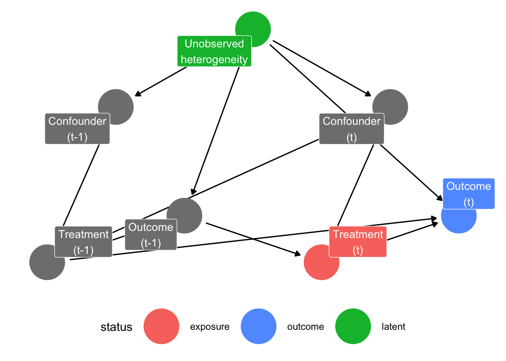
Lastly, we can also include a direct causal effect from the confounder (in our case respondents characteristics) to our outcome variable of interest.
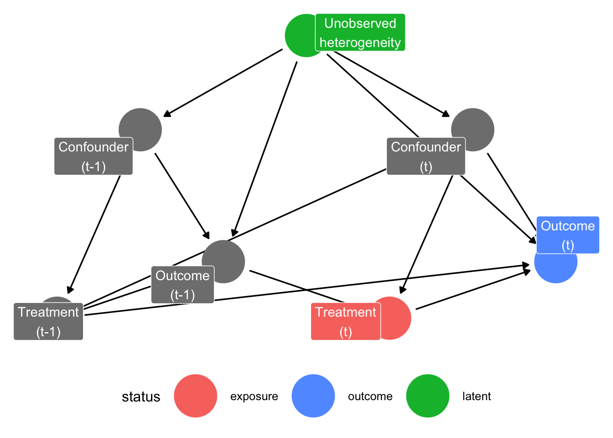
Simulation:
The Data-Generating Process
To build intuition for what MSMs do and when they are needed, we build upon and extend the simulated panel dataset of Blackwell & Glynn (2018) in which we know the true causal structure by construction. We generate data for \(100\) and \(1500\) respondents observed over \(5\) time periods (survey waves). At each wave, three variables are recorded, a time-varying confounder \(z_{ik}\), a binary treatment indicator \(x_{ik}\), and a continuous outcome \(y_{ik}\) serving as a latent measure of misreporting propensity. The simulation also tracks four potential outcomes: \(y_{ik}^{11}, y_{ik}^{10}, y_{ik}^{01}, y_{ik}^{00}\), where the superscripts denote whether the respondents participated in the previous wave and the current wave, respectively.
Unobserved Heterogeneity
To capture stable between-person differences, each respondent is assigned a time-stable unobserved characteristic \(u_i \sim \mathcal{N}(0, \sigma),\) with \(\sigma\) = 0.1. Unobserved heterogeneity influences both participation decisions and reporting behaviour throughout the panel. Because \(u_i\) is never observed, it acts as a latent common cause of treatment and outcome at every wave, opening backdoor paths that cannot be closed by conditioning on measured covariates alone. Thus, it is to be expected that we find some bias in our models later on.
Time-Varying Confounder
We initialize the confounder as \[ z_{i1} = 1.7u_i + \varepsilon_{i1}^z, \quad \varepsilon_{i1}^z \sim \mathcal{N}(-0.4, \sigma). \] At all subsequent waves, the confounder evolves according to treatment status at the previous wave: \[ z_{ik} = \gamma_1 + \gamma_2x_{i, k-1} + 1.7u_i + \varepsilon_{i1}^z, \quad \varepsilon_{i1}^z \sim \mathcal{N}(0, \sigma), \] with \(\gamma_1\) = 0.5 and \(\gamma_2\) = 0 in the scenario without treatment-induced confounding and \(\gamma_2\) = -0.5 in the scenario with treatment-induced confounding. Standard covariate adjustment breaks down here, because conditioning on \(z_{ik}\) to remove confounding simultaneously blocks part of the causal effect that runs through the treatment-confounder-outcome chain, making MSMs necessary. In our case, participating at wave \(k-1\) changes the respondents state which then predicts both their probability of participating again and how they report in the future.
Treatment Assignment
At the first wave, treatment is binary and follows a logistic model: \[\Pr(x_{i1} = 1) = \text{logit}^{-1}(\alpha_0 + \alpha_1z_{i1}),\] with intercept \(\alpha_0\) = -2.5 and coefficient \(\alpha_1\) = 1.5. From wave 2 onward, participation is modelled as a latent-variable probit: \[ x_{ik} = 1[\alpha_0 + \alpha_1z_{ik} + \alpha_2y_{i, k-1} + \nu_{ik} > 0] \quad \nu_{ik} \sim \mathcal{N}(0,1), \] with \(\alpha_0\) = -2.5, \(\alpha_1\) = 1.5, and \(\alpha_2\) = -1. Next to the current confounder \(z_{ik}\), we see that lagged outcome \(y_{i, k-1}\) predicts the participation propensity. This creates a causal relationship from past outcome to future treatment in the DAG and is the pathway through which non-ignorable attrition operates in this simulation.
Outcome Variable
The outcome at wave 1 is drawn from a baseline level that depends on unobserved heterogeneity, the confounder, and whether the respondent was treated: \[ y_{i1} = 0.8 + 0.9u_i + \eta z_{i1} + \mu x_{i1} + \varepsilon_{i1}^y, \] where \(\eta\) = 0 in the scenario where the confounder has no direct effect on the outcome, \(\eta\) = 0.3 when the confounder has a direct effect, and \(\mu\) = -0.15 is the contemporaneous effect of being treated for the first time. From wave 2 onward, the outcome is defined through a potential-outcomes decomposition: \[ y_{ik} = y_{ik}^{00} + x_{i,k-1}\underbrace{(y_{ik}^{10}-y_{ik}^{00})}_{\text{lagged effect}} + x_{ik}\underbrace{(y_{ik}^{01}-y_{ik}^{00})}_{\text{contemp. effect}} + x_{i,k-1}x_{ik}\underbrace{[(y_{ik}^{11}-y_{ik}^{01})-(y_{ik}^{10}-y_{ik}^{00})]}_{\text{interaction}}. \] The four potential outcomes are constructed additively from the baseline, the lagged effect \(\mu_0\) = 0.1, the contemporaneous effect \(\mu_1\) = -0.25 (participated in both current and previous wave) and \(\mu_2\) = -0.15 (participated in current wave only), all relative to the untreated baseline \(y_{ik}^{00}.\)
Model and Identification Strategies
Using this DGP I want to compare how different models recover the true causal effects. For each simulated dataset, we estimate 12 models, ranging from naive regression to several variants of MSM estimators, and evaluate each by its bias relative to the known true value and its RMSE (root mean squared error).
Estimands
We target two distinct causal quantities, both computed as average treatment effects (ATEs) over waves \(k \geq 2\) to allow at least one lag to be defined: \[ \begin{align*} \tau_{\text{lagged}} = \mathbb{E}[y_{ik}^{10}-y_{ik}^{00}] \\ \tau_{\text{current}} = \mathbb{E}[y_{ik}^{11}-y_{ik}^{10}] \end{align*} \] The first, \(\tau_{\text{lagged}}\), is the effect of having been treated at the previous wave while untreated at the current wave, relative to no treatment at either wave. The second, \(\tau_{\text{current}}\), is the additional effect of being treated now, given that one was already treated at the previous wave. While naive regression approaches are usually not able to separate these two quantities, ADL (autoregressive distributed lag) models and MSMs can. We thus compare different specifications of these three classes of models.
Benchmark Regressions
We have a total of 6 regression approaches. We include one naive simple regression which ignores all confounding as a benchmark, and one regression which includes \(z_{ik}\) as a confounder.
Additionally, we include 4 ADL models, which can additionally include lags of the outcome, the treatment, and/or the confounder. The idea of autoregressive distributed lag models is to include \(y_{i, k-1}\) as a regressor to account for stable unobserved heterogeneity, and by including \(x_{i, k-1}\) as a regressor to get an estimate of a lagged treatment/participation effect. However, as we discussed above, this usually introduces post treatment bias into the estimate.
Note that, for the ADL models, the lagged treatment effect is not simply the coefficient on \(x_{i,k-1}\), because \(y_{i,k-1}\) is also in the model and also depends on \(x_{i,k-1}\). To recover the total lagged effect, our ADL estimate is \[ \tau_{\text{lagged}}^{\text{ADL}} = \hat\beta_{x_{k-1}} +\hat\beta_{y_{k-1}}\cdot \hat\beta_{x_k}. \]
| Model | Regressors |
|---|---|
| ADL (1) | \(x_{ik}, x_{i,k-1}, y_{i,k-1}\) |
| ADL (1) + cont. confounder | \(x_{ik}, x_{i,k-1}, y_{i,k-1}, z_{ik}\) |
| ADL (1) + lagged confounder | \(x_{ik}, x_{i,k-1}, y_{i,k-1}, z_{ik}, z_{i,k-1}\) |
| ADL (2) | \(x_{ik}, x_{i,k-1}, y_{i,k-1}, y_{i,k-2}, z_{ik}, z_{i,k-1}\) |
Inverser-Probability-of-Treamtent Weights
The MSMs all share a GEE (generalized estimating equations) regression of \(y_{ik}\) on current treatment \(x_{ik}\) and lagged treatment \(x_{i,k-1}\), estimated under working independence, as the outcome model to account for autocorrelation of the panel data. They only differ in how the stabilized weights are constructed. We estimate three stabilized weight specifications, each with both raw and truncated variants (truncation at the 5th and 95th percentile). Cumulative stabilized weights are of the general form: \[ \tilde w_{ik} = \prod_{s=1}^K \frac{\Pr(x_{is} \mid \bar x_{i, s-1})}{\Pr(x_{is} \mid \bar x_{i, s-1}, \bar z_{is}, y_{i, s-1})}, \] where \(\bar x_{i, s-1}\) and \(\bar z_{is}\) denote the history of treatment and confounder up to the relevant wave. They only differ in how many lags are included into the model. Both numerator and denominator are estimated via logistic regression and the resulting probability scores are converted to observation-level weights by taking their fitted probabilities.
| Weight specification | Denominator model | Numerator model |
|---|---|---|
| 1-lag | \(x_{it} \sim y_{i,t-1} + z_{it} + x_{i,t-1}\) | \(x_{it} \sim x_{i,t-1}\) |
| 2-lag | \(x_{it} \sim y_{i,t-1} + z_{it} + x_{i,t-1} + y_{i,t-2} + z_{i,t-1} + x_{i,t-2}\) | \(x_{it} \sim x_{i,t-1} + x_{i,t-2}\) |
| Cumulative | \(x_{it} \sim y_{i,t-1} + z_{it} + x_{i,t-1} + \widetilde{X}_{i,t-2}\) | \(x_{it} \sim x_{i,t-1} + \widetilde{X}_{i,t-2}\) |
where \(\bar X_{i, t-2}\) denotes cumulative prior treatment exposure up to two waves before the current one.
Results
We run this simulation as a Monte-Carlo simulation with 1000 iterations for each of the four DGP scenarios
Absolute Bias
For each of the twelve models, performance is summarized by the bias relative to the true ATE: \[ \begin{align*} \text{Bias}_{\text{current}} = \tau_{\text{current}} - \hat \tau_{\text{current}} \\ \text{Bias}_{\text{lagged}} = \tau_{\text{lagged}} - \hat \tau_{\text{lagged}}. \end{align*} \] Note that the two naive regression models do not yield a lagged effect estimate.
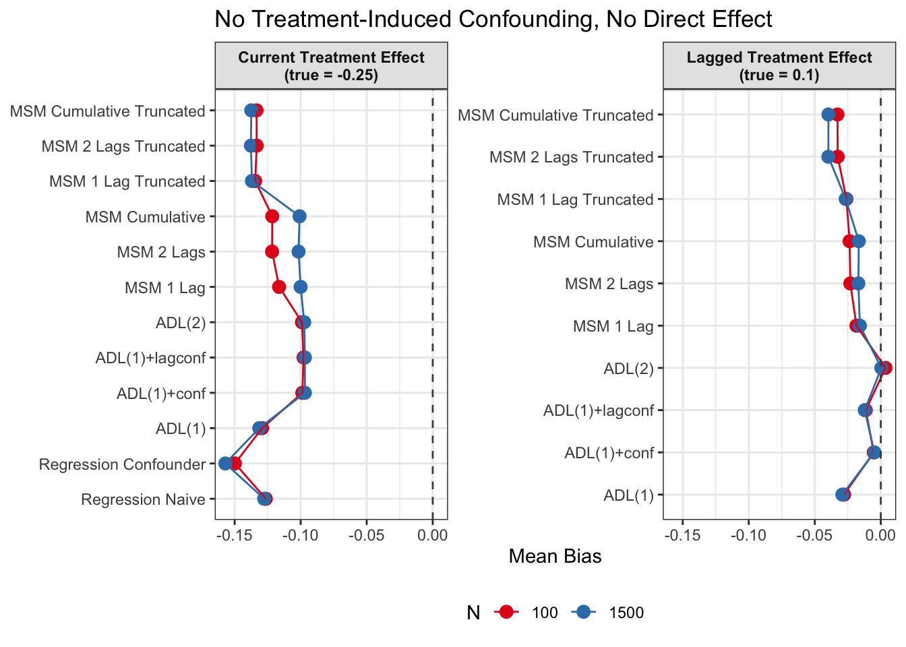
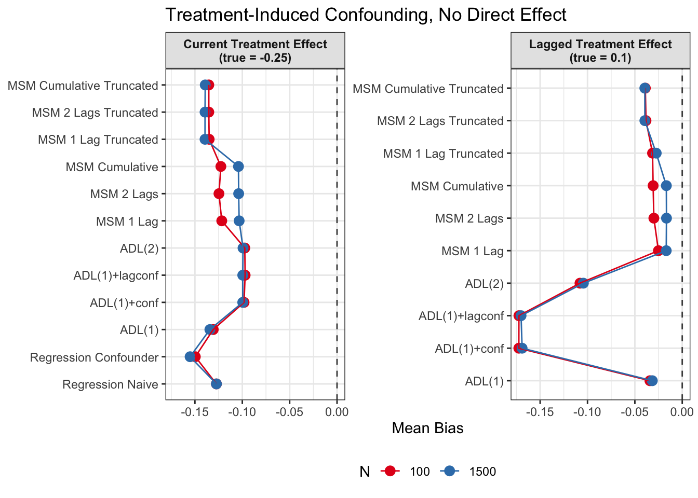
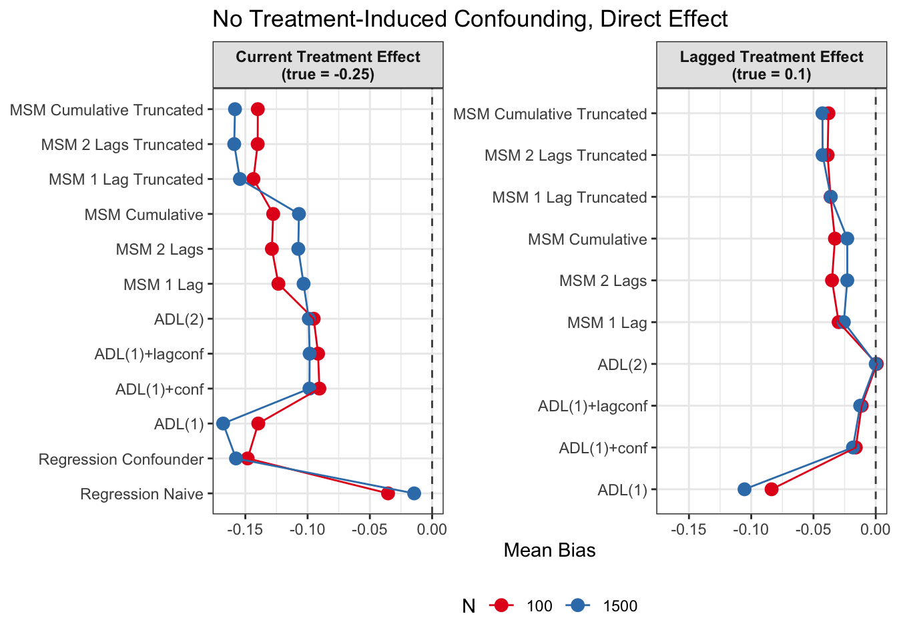
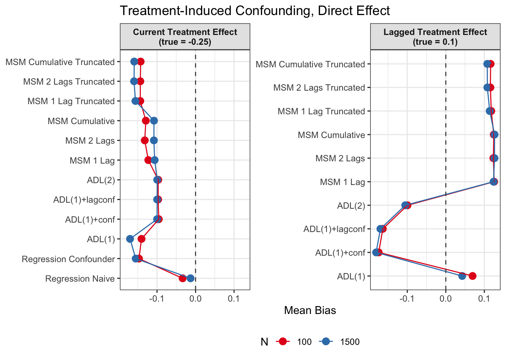
Root Mean Squared Error
In additional to absolute mean bias, we also want to measure how far estimates scatter around the true value on average, regardless of direction. We therefore also calculate the RMSE (root mean squared error):
\[ \begin{split} \mathrm{RMSE} &= \sqrt{\mathrm{Bias}^2+\mathrm{Variance}} \\ &= \sqrt{\frac{1}{B} \sum_{b=1}^B (\hat\tau_b - \tau)^2}, \end{split} \] where \(B\) = 1000 is the number of Monte-Carlo iterations, \(\hat\tau_b\) is the estimate from replication \(b\), and \(\tau\) is the true effect.
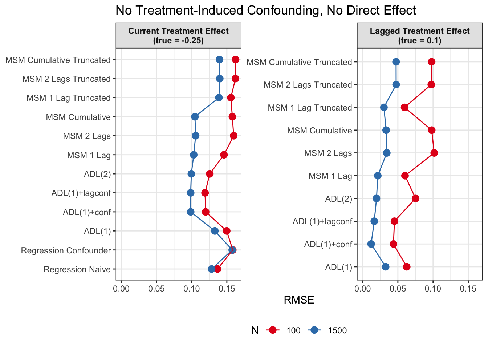
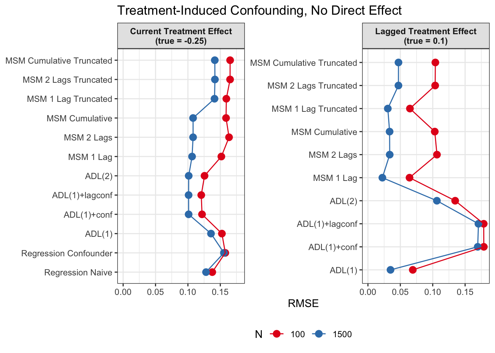
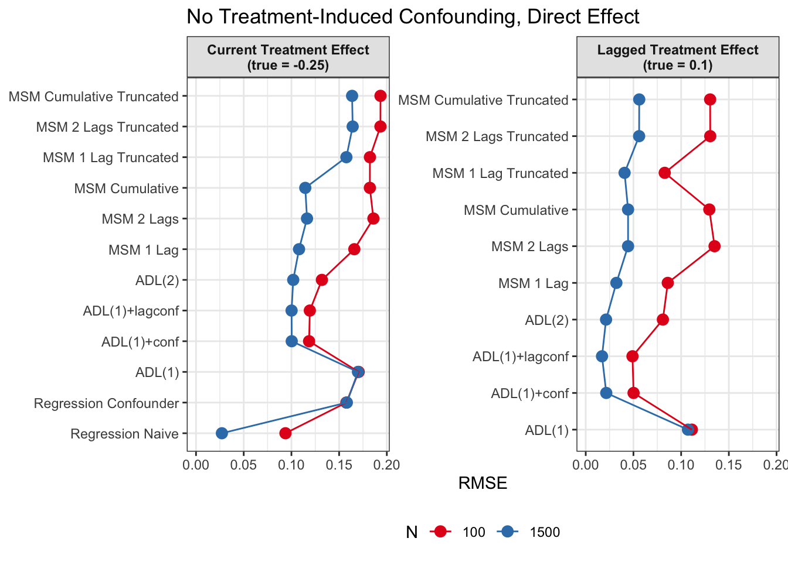
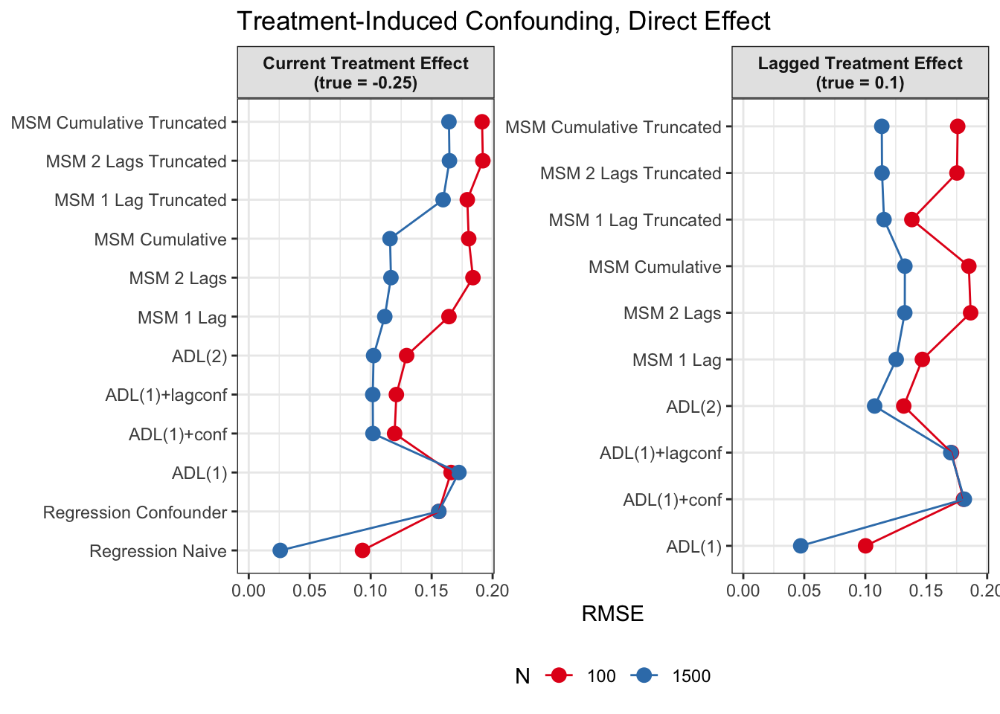
Discussion
Since we are specifically interested in the effect of participation in previous survey waves on current misreporting propensity, we mostly care about performance of the lagged effect estimates when there is treatment-induced time-varying confounding (figures 2 and 4).
In general, we see that in terms of bias, we get less biased results for the lagged effect compared to the current treatment effects. We also see that MSMs generally outperform ADLs in scenarios with treatment-induced time-varying confounding.
We see similar results in terms of RMSE. Lagged treatment effects are more accurate than current treatment effects and MSMs generally perform better in cases of treatment-induced time-varying confounders compared to ADLs. While sometimes ADL models perform quite well (e.g. ADL (1)), MSMs seem to be less prone to model misspecification.
All in all, based on these results, I would prefer MSMs to ADL models, since model specification seems to be influencing ADL models more strongly and misspecification might become an issue. MSMs all perform reasonably well, even though they seem to struggle somewhat in cases with strong treatment-induced confounding and direct causal effects of time-varying confounders on the outcome variable.
References
Blackwell, M., & Glynn, A. N. (2018). How to make causal inferences with time-series cross-sectional data under selection on observables. American Political Science Review, 112(4), 1067–1082. https://doi.org/10.1017/S0003055418000357
Chesnaye, N. C., Stel, V. S., Tripepi, G., Dekker, F. W., Fu, E. L., Zoccali, C., & Jager, K. J. (2022). An introduction to inverse probability of treatment weighting in observational research. Clinical Kidney Journal, 15(1), 14–20. https://doi.org/10.1093/ckj/sfab158
Cole, S. R., & Hernán, M. A. (2008). Constructing inverse probability weights for marginal structural models. American Journal of Epidemiology, 168(6), 656–664. https://doi.org/10.1093/aje/kwn164
Robins, J. M. (1999). Association, causation, and marginal structural models. Synthese, 121(1/2), 151–179.
Robins, J. M., Hernan, M. A., & Brumback, B. (2000). Marginal structural models and causal inference in epidemiology. In Epidemiology (No. 5; Vol. 11, pp. 550–560). Lww.